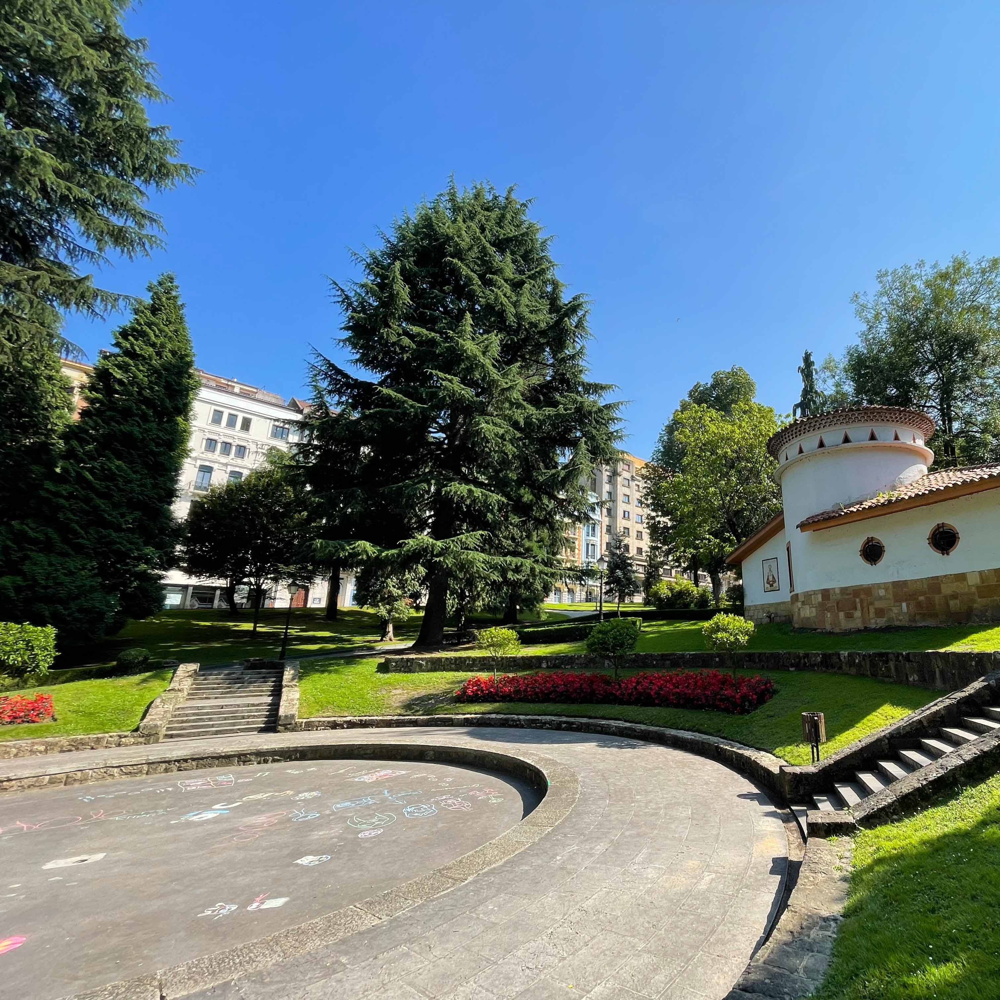

Vídeo del parque que ofrece una vista panorámica de 360º desde el punto de grabación.
Vídeo del parque con vista en 360º
En el Bombé
.png) SAN MATEO
SAN MATEO
Sobre el origen de las fiestas de San Mateo, las crónicas cuentan que en 1894
el Ayuntamiento de Oviedo
desembolsó 5.000 pesetas, para contratar bandas de
música y grupos de gaita y tambor.
.jpg)
.png)
Esta festividad
tiene su origen en la concesión del jubileo de la Santa Cruz por
parte del Papa Eugenio IV, que concedió, en una bula, en 1428, la indulgencia
plenaria a cuantos visitantes y peregrinos acudían a la Catedral de Oviedo a venerar la
Santa Cruz de los Ángeles y ofrecían una limosna podían obtener el perdón por sus
pecados.
También lo podían hacer los ocho días anteriores o posteriores del año en que tal festividad cayera en viernes. Desde 1982 se establece que puedan lograr la citada indulgencia todas las personas que cumplan con los requisitos del 14 al 21 de septiembre.
.png) Del Día de América
Del Día de América Se celebró por primera vez, en 1950 cuando el pintor ovetense Alfonso Iglesias , tuvo la idea de homenajear a los asturianos emigrados a Latinoamérica. Se realiza cada 19 de septiembre durante las Fiestas de San Mateo. Es un desfile folclórico y de carrozas que destaca la cultura asturiana y las influencias de países latinoamericanos y europeos que han acogido a emigrantes asturianos.
Al principio tuvieron gran protagonismo los grandes coches americanos, conocidos como "haigas", con los que regresaban los asturianos a su tierra durante los veranos. Los lujosos vehículos, símbolo de prosperidad, se engalanaban con flores y banderas. Algunas figuras del desfile, como Telva y Pinón, son un sentido homenaje al fundador del desfile, que con su humor gráfico, inteligente y enraizado en la identidad asturiana, elevó la cultura asturiana al arte actual.
.jpg)
Santo Sudario
.png) El Pañolón
El Pañolón
El Día de San Mateo, 21
de
septiembre, se exhibe en la Catedral el Santo Sudario (conocido popularmente como
"el pañolón"), es una reliquia de la Iglesia católica que se
encuentra depositada en la Cámara Santa de la Catedral de San
Salvador de Oviedo y se cree
que cubrió el rostro de Jesucristo. Se trata de un pañuelo de lino con varias manchas, de forma rectángular con unas medidas de 85,5 x 52,6 cemtímetros. Se le venera como una prenda funeraria de Jesús de Nazaret mencionada en el Evangelio de San Juan.
Les Paxarines
.png) Amuleto o Protector
Amuleto o Protector
Son figuritas elaboradas con agua y harina teñida con azafrán a la que se le dan distintas formas: cestitas, nidos con huevos,... adornos con lazos. La tradición cuenta que sirven como amuleto o protector contra las tormentas.
Se compran únicamente a la salida de la Catedral, tras la celebración de la misa en honor a San Mateo, el 21 de septiembre. Esta costumbre data de hace más de 300 años.
Explora las Otras Zonas Verdes de Oviedo

Descubre tu refugio natural en Oviedo, explora los diversos oasis y remansos de paz que la ciudad tiene para ofrecer.
Al igual que en los parques, en estas zonas verdes podrás encontrar Naturaleza | Deporte | Bienestar.
Se anuncia con cuatro banderas rojas colocadas en los pináculos de la torre de la Catedral y otra, mayor, en lo alto de la aguja, con la Cruz de los Ángeles en medio del estandarte.
.jpg)
Creado por Nacho Manzano, el menú está compuesto por: fabes con pantruque, albóndigas de ternera asturiana y gochu celta con puré de patata y queso asturiano, tartaleta de manzana y helado de vainilla, vino de Cangas y sidra.
.png) Desde 2022
Desde 2022La noche del 20 de setiembre se lanzan los fuegos artificiales, que habitualmente eran en el Parque de Invierno y desde el año 2022 tienen lugar en la Plaza Tuero Bertrand ubicada en el barrio de Montecerrao.
.jpg)
.jpg)
Juegos de mesa tradicionales
.png) Tableros de diversión
Tableros de diversión
La variedad de juegos de mesa que hay es para poner a prueba las diferentes habilidades y
estrategias de cada uno.
Hay juegos que están pensados para desarrollar la coordinación, la precisión del
movimiento, la
estimación de distancias y la dosificación de fuerza.
Otros que combinan la destreza física y mental con el dinamismo y la emoción. Estos juegos son ideales tanto para niños como para adultos, ya que ofrecen un juego divertido y desafiante para la mente.
.jpg)
Los juegos
Lanzamiento de aros
.jpg)
Los juegos
Ladrillos de construcción
.jpg)
Los juegos
Mesa de billar holandesa
.jpg)
Los juegos
Las damas
.jpg)
Los juegos
Disco de equilibrio
.jpg)
Los juegos
Descubrir números
.jpg)
Los juegos
Juego de cubos
.jpg)
Espacio para la música
.png) Conciertos en directo
Conciertos en directo
Toda la ciudad se entrega a la diversión y se vuelca con la cultura durante las fiestas de San
Mateo. Funciones de teatro y ciclos de cine son otros de los atractivos que se extienden por toda la
ciudad. La plaza de la Catedral, la del Ayuntamiento, el paseo del Bombé, la Corrada del
Obispo y la Escandalera, entre otras, son puntos de encuentro destacados para disfrutar
de las actividades.
También hay grandes conciertos de pago en el recinto de la Ería, actuaciones en la calle Uría, en el
paseo del Bombé y el Concurso de rock en la plaza de Feijóo.
Y sobre todo las charangas que recorren las calles de Oviedo.
.jpg)
Los juegos
La escalada
.jpg)
Los juegos
Los hinchables
.jpg)
Los juegos
Los columpios
.jpg)
Los juegos
El tiovivo
Escalada y saltos
La escalada es la curiosidad, la acción de trepar para alcanzar puntos altos y de acceso complicado,
es una actividad instintiva y brinda la oportunidad de conectarse directamente con la naturaleza.
Para escalar, se requiere una técnica en la que se combine la destreza con la fuerza física y la
fortaleza mental.
Los castillos hinchables son el mejor entretenimiento para las fiestas, los que más les gusta a los
niños son los que tienen toboganes y rampas.
.png)
.png)
San Mateo
( en fiestas)
En el estanque de Covadonga y en el Paseo del Angelín

Estanque de Covadonga
Diversión para los más pequeños:
hay talleres: títeres, magia y animación.
Los talleres son:
de dibujo en 3D
de globoflexia
de iniciación de drones
Animación musical. Con varias actuaciones.
Pequeños ilusionistas. Con varias actuaciones.
Paseo del Angelín
Diversión para los adolescentes:
Hay espacio Gaming: realidad virtual, simuladores de conducción y consolas.
Los talleres son:
Bikespinart: ¡Pinta y pedalea!
Festival free style fútbol
Espacio lúdico de juegos
Carrusel de madera
Lo que entraña la maraña
Pulse game
.jpg)
.jpg)
.jpg)
Historia de...
.png) Fin de Fiesta
Fin de Fiesta
Como cada año, el domingo siguiente a San Mateo se celebra la tradicional Romería del Cristo de las Cadenas, en el parque del Truébano, con la Real Banda de Gaitas Ciudad de Oviedo, la Bandina y Grupos Folklóricos. Con esta jira se pone el broche de oro a las fiestas de San Mateo y al verano ovetense.
Sobre Nosotros
Somos un equipo de desarrolladores web dedicados a crear experiencias únicas.
Nos
esforzamos por transformar la visita a los parques por excelencia de Oviedo en experiencias
digitales visualmente atractivas, intuitivas y fáciles de usar.
© Copyright 2025.
Todos los derechos reservados.

.jpg)
.jpg)
.jpg)
.jpg)